AI Trends 2025 🚀
🦜 LangChain's State of AI Agents Report
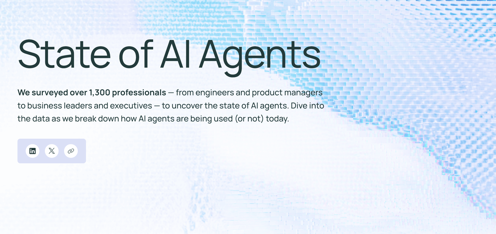🦜 LangChain's State of AI Agents Report
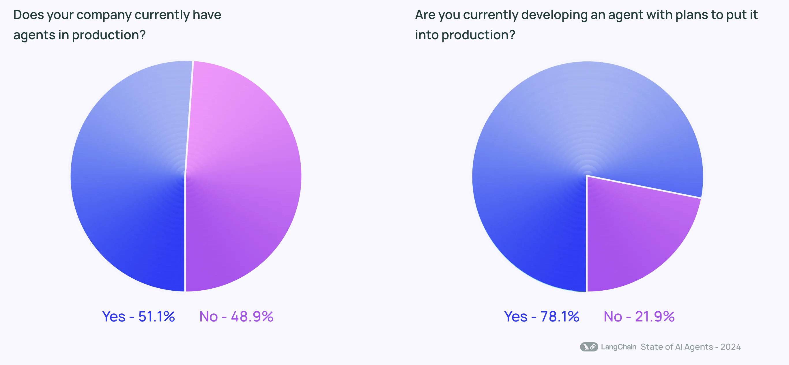🦜 LangChain's State of AI Agents Report
🦜 LangChain's State of AI Agents Report
- 51% of surveyed companies have integrated AI agents into production environments.
- 78% of organizations are actively developing AI agents for near-future deployment.
- 90% of non-tech companies are either using or planning to use AI agents.
The Next Buzzword of 2025
Agentic AI
The future of autonomous, intelligent systems.
Media Mentions of Agentic AI
-
 Looking At The Crystal Ball: 2025 Predictions For Agentic AI
(21.01.2025)
Looking At The Crystal Ball: 2025 Predictions For Agentic AI
(21.01.2025)
-
 5 Predictions for AI
in 2025 (16.01.2025)
5 Predictions for AI
in 2025 (16.01.2025)
-
 AI Agents Are Here. How Much Should We Let Them Do? (15.01.2025)
AI Agents Are Here. How Much Should We Let Them Do? (15.01.2025)
🎖️ Honorable Mention 🎖️
Agentic AI
AI that autonomously make decisions, take actions, and learn to achieve specific goals.
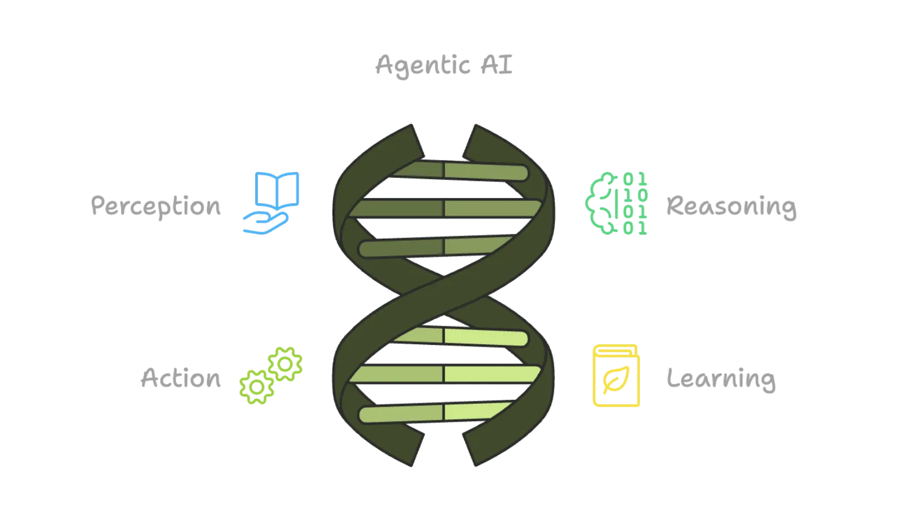
Source: AI Agents vs Agentic AI, What's the Difference and Why Does It Matter?
Agentic AI vs AI Agents
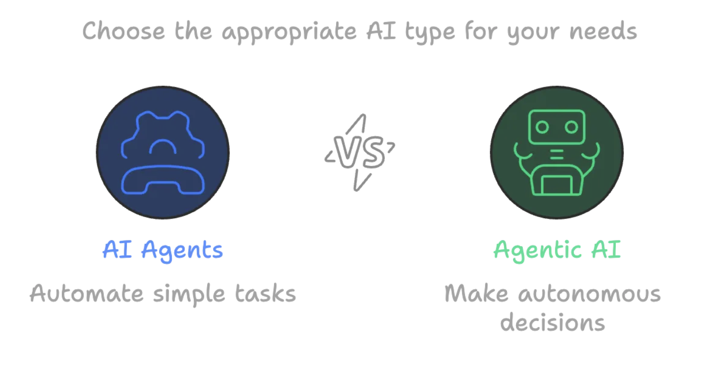Agentic AI vs AI Agents
| Aspect | Agentic AI | AI Agent |
|---|---|---|
| Autonomy Level | Highly autonomous | Limited autonomy |
| Goal-Orientation | Goal-driven | Task-specific |
| Learning Capabilities | Continuously learns and improves | May not learn or only learns within set rules |
| Complexity | Handles complex, dynamic environments | Handles simpler, more structured tasks |
| Decision-Making Process | Makes decisions based on reasoning and analysis | Pre-programmed responses to inputs |
| Interaction with Environment | Actively adapts to surroundings and changes | Reacts to set inputs but doesn't adapt |
| Responsiveness to Change | Changes its goals and methods autonomously | Limited ability to adapt to new situations |
Agentic AI
Agentic AI Actions
Agentic AI Actions
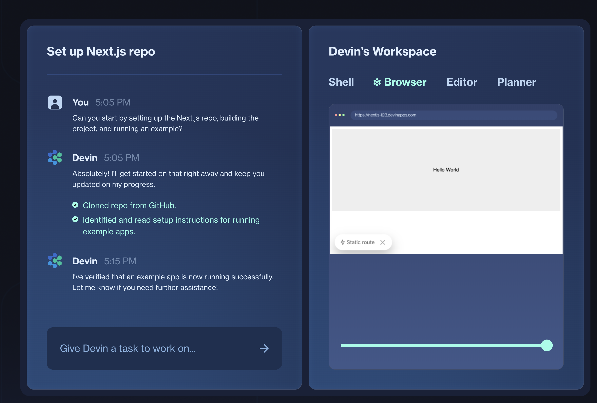How can we build Agentic AI
- Model (LLM): The "brain" generating text/logic.
- Orchestration: Multi-step logic & planning
- Tools:
- Extensions (agent-side, real-time external calls)
- Functions (model outputs arguments, executed client-side)
- Data Stores (vector DB, document retrieval)
How can we build Agentic AI
Extensions
Extensions
Bridging between the model and the outside world
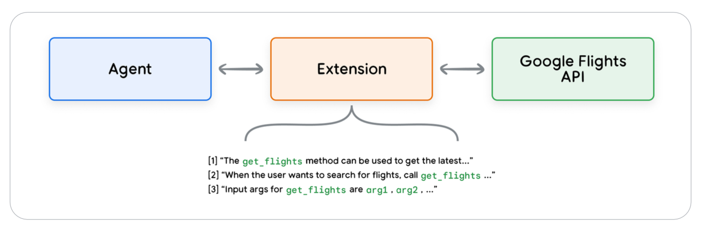- Teaches the agent how to use the API endpoint
- Teaches the agent what arguments are needed
Extensions
Modular tools that give agents real-world capabilities
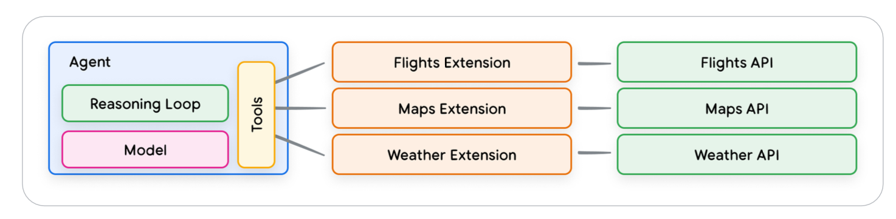Example
import vertexai
import pprint
PROJECT_ID = "YOUR_PROJECT_ID"
REGION = "us-central1"
vertexai.init(project=PROJECT_ID, location=REGION)
zefix_extension = Extension.create(
manifest={
"name": "zefix",
"description": "Access to the swiss central
business name index",
"api_spec": {
"openApiYaml": ZEFIX_OPENAPI,
},
"auth_config": {
"auth_type": "HTTP_BASIC_AUTH",
"httpBasicAuthConfig": {
"credentialSecret": ZEFIX_SECRET,
},
},
}
)
response = zefix_extension.query("Search for Renuo")
print(response.steps[-1].parts[-1].text)
😵💫 DEMO
Functions
Functions
Modules that accomplish a specific task
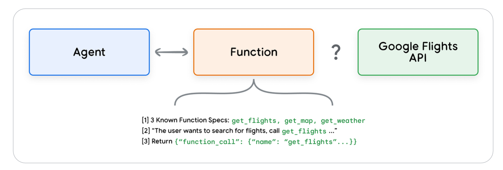- Model decides which functions to use and when
- Executed on the client side
Functions
API endpoint execution is handled by the client
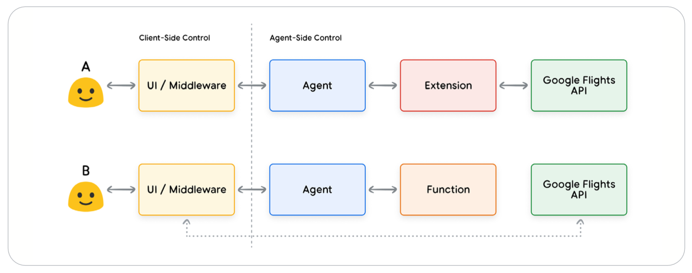Functions
- API Layer Control: Execute API calls through middleware or frontend frameworks
- Security & Auth: Handle restricted APIs not accessible to agent infrastructure
- Operation Timing: Manage batch operations and human-in-loop review flows
- Data Transformation: Apply additional processing to API responses
- Rapid Development: Iterate on agent logic without deploying API infrastructure
Example
from vertexai.preview.extensions import Extension
def list_extensions():
"""Provides a list of Vertex AI extensions available
to the user.
Returns:
list[tuple[str, str, str]]: A list of tuples where
each tuple contains (in order) the display name,
the resource name, and the creation time of an extension.
"""
extensions_list = Extension.list()
return [(
e.display_name,
e.resource_name,
e.create_time.strftime("%m/%d/%Y, %H:%M:%S")
) for e in Extension.list()]
Example
model = GenerativeModel("gemini-1.5-flash-001")
user_prompt_content = Content(
role="user",
parts=[
Part.from_text("Which Vetex AI extension do I have access to ?"),
],
)
support_tool = Tool(
function_declarations=[list_extensions_function],
)
response = model.generate_content(
user_prompt_content,
generation_config=GenerationConfig(temperature=0),
tools=[support_tool],
)
for function_call in response.candidates[0].function_calls:
if function_call.name == "list_extensions":
api_response = list_extensions()
response = model.generate_content(
[
user_prompt_content,
response.candidates[0].content,
Content(
parts=[
Part.from_function_response(
name=function_call.name,
response={"content": api_response},
),
],
),
],
tools=[support_tool],
)
print(response.text)
😵 DEMO
Data Stores
Data Stores
Connecting agents to real-time data sources
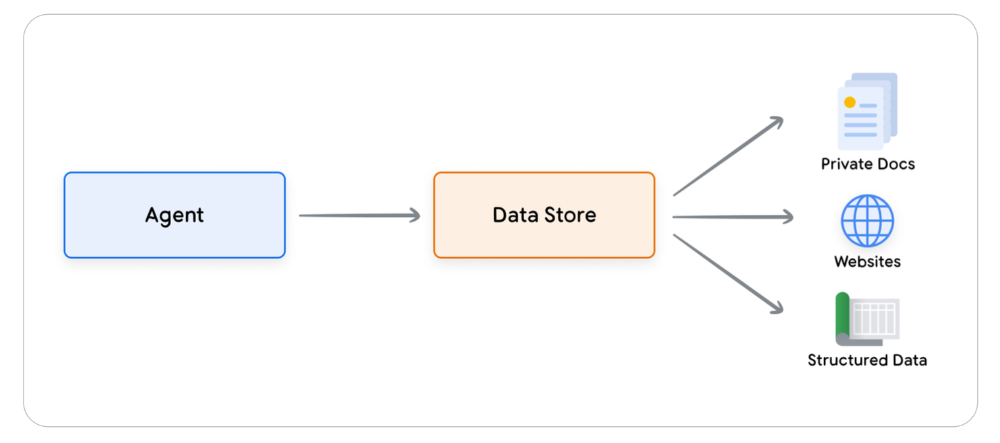- Typically implemented as a vector database
- RAG (Retrieval Augmented Generation) is a common use case
Data Stores
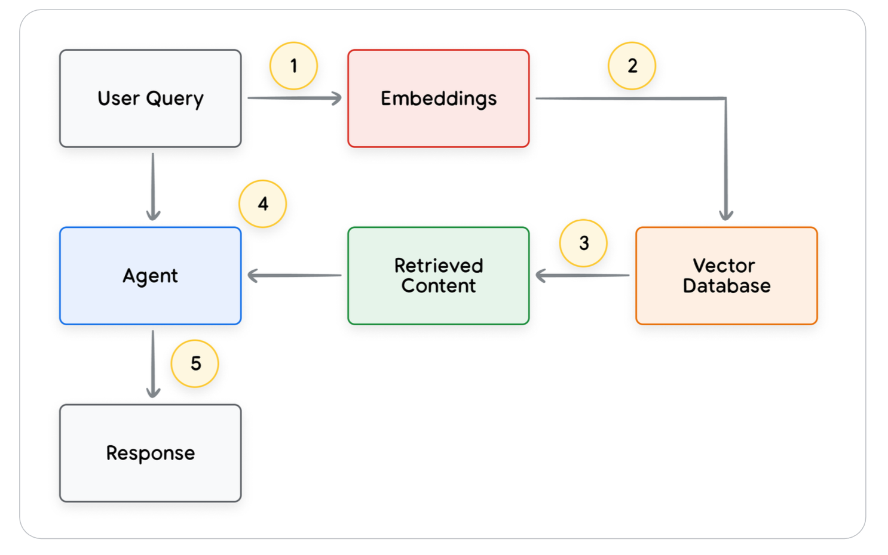Tools Recap
| Extensions | Function | Data Stores | |
|---|---|---|---|
| Execution | Agent-side | Client-side | Agent-side |
| Use Case |
|
|
|
Summary & Closing
- Agentic AI: Multi-step, self-improving AI that goes beyond chat.
- Core building blocks: Model, Orchestration, Tools, & Learning Loop.
- Practical Use Cases: Customer service, dev ops, marketing, healthcare, etc.